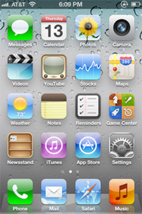

iOS 5
O iOS 5 é o quinto maior lançamento do sistema operacional móvel iOS desenvolvido pela Apple Inc. , sendo o sucessor do iOS 4 . Ele foi anunciado na Worldwide Developers Conference da empresa em 6 de junho de 2011 e foi lançado em 12 de outubro de 2011. Foi sucedido pelo iOS 6 em 19 de setembro de 2012.
O iOS 5 renovou as notificações, adicionando banners temporários que aparecem na parte superior da tela e introduzindo o Notification Center , um local central para todas as notificações recentes. O sistema operacional também adicionou o iCloud , serviço de armazenamento em nuvem da Apple para sincronização de conteúdo e dados em dispositivos habilitados para iCloud, e o iMessage , serviço de mensagens instantâneas da Apple. Pela primeira vez, as atualizações de software do sistema podem ser instaladas sem fio, sem a necessidade de um computador e o iTunes . O iOS 5 também contou com profunda integração com o Twitter , introduziu gestos multitarefa em iPads e adicionou um atalho de câmera facilmente acessível a partir da tela de bloqueio.
O iOS 5 foi alvo de críticas por usuários do iPhone 4S , já que a versão inicial apresentava pouca vida útil da bateria, falhas de cartões SIM e ecos durante chamadas telefônicas. Esses problemas foram corrigidos em releases subseqüentes.

Desenvolvedor Apple Inc.
Modelo de origem Fechado , com componentes de código aberto
lançamento inicial 12 de outubro de 2011
Último lançamento 5.1.1 / 07 de maio de 2012
Tipo de kernel Híbrido ( XNU )
Licença EULA proprietário, exceto para componentes de código aberto
Antecessorr iOS 4
Sucessor iOS 6
iOS 5.0.1 em execução
em um iPhone 4S.
Apps
- nome do iPod muda para Música
- Lembretes
- Banca de jornais
- Siri ( 4S e acima)
História
Introdução e lançamento inicial
O iOS 5 foi introduzido na Apple Worldwide Developers Conference em 6 de junho de 2011, com uma versão beta disponível para desenvolvedores no final do dia.
O iOS 5 foi lançado oficialmente em 12 de outubro de 2011.
Atualizações
5.0.1
O iOS 5.0.1 foi lançado em 10 de novembro de 2011, como a primeira
atualização para o iOS 5. A atualização incluía correções para problemas
de bateria.
5.1
O iOS 5.1 foi lançado em 7 de março de 2012, juntamente com o novo iPad com tela de retina. A atualização incluiu suporte para o idioma japonês para Siri , um aplicativo de câmera redesenhado para iPad e correções de bugs para problemas de vida útil da bateria.
5.1.1
O iOS 5.1.1 foi lançado em 7 de maio de 2012. A atualização incluiu melhorias de confiabilidade para fotos de alta faixa dinâmica , correções de sincronização de favoritos do Safari e correções de bugs.
Recursos do sistema
Notificações
Nas versões anteriores do iOS, as notificações apareciam na tela como caixas de diálogo, interrompendo a atividade atual. No iOS 5, as notificações são reformuladas e exibidas como um banner temporário na parte superior da tela. Notificações recentes também podem ser acessadas puxando um " Centro de Notificação " do topo da tela. Os usuários que preferirem o antigo sistema de notificação podem mantê-lo escolhendo a opção apropriada no menu Configurações.
iCloud
O iOS 5 introduz o iCloud , o serviço de armazenamento na nuvem da Apple.
O novo serviço permite que os usuários sincronizem suas músicas,
imagens, vídeos e dados de aplicativos em todos os dispositivos
habilitados para o iCloud.
Atualizações sem fio
O iOS 5 permite atualizações do sistema sem fio em dispositivos compatíveis, o que significa que um computador e o iTunes não são necessários para atualizar dispositivos. A ativação de novos dispositivos e atualizações pode ser feita sem fio.
Integração do Twitter
O iOS 5 apresenta uma integração profunda no Twitter . Os usuários podem entrar no Twitter diretamente no menu Configurações. As fotos podem ser "twitadas" diretamente dos aplicativos Fotos ou Câmera, e os usuários também podem twittar nos aplicativos Safari , YouTube e Google Maps.
Multitarefa
Os gestos multitarefa estreiam no iPad com o lançamento do iOS 5. A
multitarefa permite que os usuários pulem entre aplicativos sem tocar
duas vezes no botão de início ou ir primeiro para a tela inicial. Gestos de multitarefa estavam disponíveis apenas no iPad 2.
Teclado
O teclado do iPad pode ser desacoplado da parte inferior da tela e pode ser dividido em dois meio teclados.
Recursos do aplicativo
Fotos e Câmera
O primeiro lançamento do iOS 5 permitiu que o aplicativo Câmera fosse
acessado facilmente a partir da tela de bloqueio pela primeira vez.
Os usuários clicaram duas vezes no botão de início, um ícone de câmera
apareceria ao lado da mensagem "Deslize para desbloquear" e os usuários
clicariam nele para acessar diretamente a câmera. A atualização do iOS 5.1 simplificou o processo, soltando o
procedimento de clique duplo do botão Iniciar, mas exigindo que os
usuários passassem o ícone da câmera para cima. Por motivos de segurança, quando o dispositivo está bloqueado com uma
senha, esse método de acesso à câmera permite acesso somente ao
aplicativo Câmera e a outros recursos do dispositivo.
Pressionar o botão de aumentar o volume permite ao usuário tirar uma foto.
Mensagens
O iMessage , um novo serviço de mensagens instantâneas integrado ao aplicativo Mensagens
, permitiu que qualquer pessoa com um dispositivo iOS 5 enviasse
mensagens básicas e multimídia para qualquer pessoa com um dispositivo
iOS 5 compatível. Em contraste com o SMS
, as mensagens enviadas pelo iMessage usam a Internet em vez de
mensagens de texto comuns do celular, mas também em contraste com o SMS
normal, os dispositivos Android e BlackBerry não são compatíveis com o serviço. iMessages são sincronizados entre os dispositivos do usuário e são codificados por cor azul, com SMS regular em verde.
Mail
O aplicativo iOS Mail incluiu formatação rich text , melhor controle de recuo, sinalização de mensagens e a capacidade de arrastar endereços entre as linhas Para, CC e CCO.
Lembretes
Lembretes permite que os usuários criem listas de tarefas com alertas que podem ser baseados em data ou em local.
Banca de jornais
O Play Banca não funciona como um aplicativo nativo, mas sim como uma pasta especial. Quando selecionada, mostra ícones para todos os periódicos nos quais o usuário se inscreveu, como jornais e revistas. Novos problemas são baixados automaticamente.
Música e Vídeos
O aplicativo do iPod foi substituído por aplicativos separados de música e vídeos.
Problemas
Problemas iniciais de atualização
A versão inicial de outubro de 2011 do iOS 5 teve problemas
significativos de atualização, com erros durante a instalação e
sobrecarga do servidor da Apple.
vida útil da bateria do iPhone 4S
Após reclamações dos usuários, a Apple confirmou oficialmente que o iOS 5 tinha bateria fraca para alguns usuários do iPhone 4S , e afirmou que uma atualização de software iria corrigir os problemas. A atualização do iOS 5.0.1 corrigiu bugs relacionados a problemas de bateria.
Conectividade Wi-Fi cai
Em novembro de 2011, o Engadget informou que a atualização do iOS 5 causou a queda da conexão Wi-Fi para alguns usuários.
O relatório também escreveu que "A atualização recente do iOS 5.0.1
certamente não resolveu o problema", e questionou se os eventos não
estavam relacionados ou eram parte de um problema maior.
Falha no cartão SIM
Alguns usuários do iPhone 4S relataram problemas com o cartão SIM no iOS 5, recebendo mensagens de erro sobre "Invalid SIM" e "SIM Failure". A Apple lançou uma segunda versão de software da atualização 5.0.1 projetada para corrigir problemas com o cartão SIM.
Eco de chamada telefônica
Alguns usuários do iPhone 4S relataram a aparência aleatória de ecos
durante as chamadas feitas com fones de ouvido na versão inicial do iOS
5. A outra parte na chamada às vezes não conseguia ouvir a conversa
devido a esse problema.
Recepção
Muitos aspectos do iOS 5 receberam críticas positivas, incluindo o novo
centro de notificações, a capacidade de sincronizar e atualizar sem
fio, o iMessage e muito mais. Richmond Shane da Telegraph
disse que "o iOS 5 é uma atualização brilhante para um sistema
operacional já brilhante. Diferentes pessoas procuram por coisas
diferentes em um sistema operacional móvel. É por isso que algumas
pessoas preferem BlackBerry, Android ou Windows Mobile. Eu valorizo a
facilidade de uso e atenção para detalhes em design. Com o iOS 5, a
Apple continua a oferecer a melhor experiência de usuário disponível. "
Richard Goodwin, da Know Your Mobile,
disse: "Em suma, achamos que o iOS 5 é tudo o que precisa para ser
mais. Mal podemos esperar para colocar nossos dentes nele assim que for
lançado no outono de 2011."